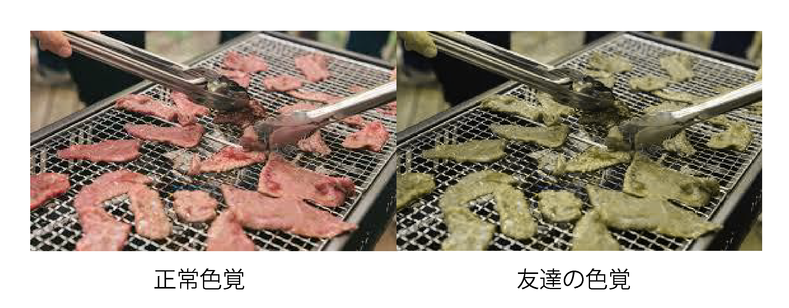
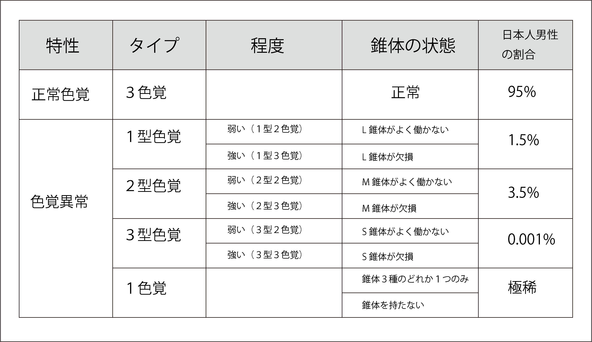

こんにちは抹茶らてです。今回は残念ながら
皆さんが楽しみにしていた モフモフで ケモ
い記事
ではありません。しかも物凄く真面目なお話をしてしまいます。出来ればプログラム班の方に見て貰いたいと思ってます。
さて、いきなり上の質問されても何のことかわからないと思います。この質問は誰もがはいと答えるでしょう。しかし日本人男性の２０人に一人は 先天性、後天性により色が正確に見れません。ですがこれは重度の症状だけでなく軽度の症状も含まれます。 この症状は色覚異常と 呼びます。また色覚異常を有する方を色弱者と言い、 色弱でない人を 一般色覚者と言います。
最近話題の色覚異常について軽く触れていきたいと思います。
0.あなたは正確に色を見ることができますか？
1.友達が実は色弱者 だった話
2.色を見るには？
3.色覚異常になると…
4.色のユニバーサルデザインを目指すには
5.さいごに
久しぶりに高校から の友達の A 君とラーメン屋で夕食をとっていた時である。当時私の中ではマイブームだった人の金で食う焼肉は美味しいという 名言を A 君に話したら、「俺、家族以外と焼肉にいけないんだよね」と言われ 、私がポカーンとしていると A 君は「生肉と焼いた肉の見分けがつかないから」と私を追い詰めました。その当時 色覚異常など知らなかった私はグーグル先生に色覚異常についてすぐさま答えさせました。すると友達が言っていた ことが書いてありました。 友達の見え方を再現したものが下の画像です。 
どうでしょうか？ 生肉なのに焼肉に見えます。これには流石に驚きましたか？ だんだんと始めに質問した内容の真意がわかってきたのではないのでしょうか？次は具体的な内容を説明 します。
色覚異常の事を語る前にどうして色が見えるのか少しだけ触れます。一応最低限の知識だけですが、めちゃくちゃ眠くなるので我慢して見てね。
色を見るためには、光がどうしても必要です。これがないと暗闇で何にも見えません。そして光は、電磁波の一種でもあるため。波のように振動しています。
人が見える可能な光を可視光と呼ばれてます。その可視光の中で、短い波長は青紫から青色が見えて中くらいの波長は緑から黄色。
長い波長は、橙から赤色が見えます。
さてもう一息です。今度は、光を感じる目の動きです。光は、黒目の中心部の瞳孔から入ってピント調整する水晶体を通り、網膜に到達します。
その網膜と呼ばれる場所には、明るい所で働く錐体と暗い所で働く杆体という光を感じる細胞(正確には視細胞と言います)
その中の錐体に短波長を感じるS 錐体 (青を主に感じるよ)と
中波長を感じるM 錐体(緑を主に感じるよ)と
長波長を感じるL 錐体(赤（修造）を主に感じるよ)
の三種類の錐体細胞からの出力が色を感じる元になります。
じゃあ色覚異常ってどうなんよ。
色弱者は一般色覚者が違う色に見える組み合わせが見えなかったり、似た色などに見えて色の区別がつかないことが多々あることは私の友達のお話でわかったと思います。 じゃあ何故色が見えないのでしょう？
原因は錐体 です。 先ほど三種類の錐体細胞のどれかないし全てに何かしらの欠損や機能異常 があると色覚異常を引き起こします。 下の表が症状の表です。 
３型色覚と１色覚はまれなので割愛します。主に１型と２型色覚を解説します。 １型色覚と２型色覚で共通しているのは赤系統と緑系統が区別つきにくいです。 特に１型色覚の方は赤が暗く 黒っぽく見えるので赤と黒の 区別があまりつきません。２型にはそれがありません。そして １、２型色覚は赤と緑の距離が 近づくので色相環が縦長になります。赤と緑はもちろん、橙と黄色、青と紫や暗く 鈍いトーンのこげ茶と深緑などの似たような色の区別がつかなくなります。 また無彩色とピンク、水色も縦長 になった色相環上では同じような色に見えてしまいます。
また色以外で見えずらくなる要因としては、
暗いところ
対象物が小さい
２色が離れている
短時間でみる
主にこのような状態も色が区別しずらい要因となり得ます。
色から改善するなら
赤は黄みを足してオレンジぽくする
オレンジは赤が黄みを帯びたのでもっと黄色を足して 色を離す。
緑は黄みを帯びさせるといい。
青は少し明度をあげると見やすくなる
が主な改善方法です。
色以外は…
明度差をつける。（色の明るさを大きくとる）
特に黄色の文字などをはっきり見せる時は 無彩色のアウトライン（枠線）を入れる
折れ線グラフなどは、線の色だけで区別するのではなく、点線、実線で 視覚的に区別させる。
色覚異常シュミレーター（アプリなど）を使用して見てみる。 イラレでもできるよ
拙い記事を読んでいただきありがとうございます。今回の記事はどうでしょうか？時間がつめつめだったので画像が雑だとか、後半を箇条書きで済ませる手抜き 記事になってしまいましたが、色について興味を持っていただけたでしょうか？ 皆さんにはあまりなじみのないことだと思いますがこれからデザイン 分野ではもう改善がなされています。これからは色弱者を考慮するデザイン、UI が 不可欠になります。現に文化祭などにゲームを出展している本サークルは創作ゲーム上での操作に関して色彩による視覚情報に頼ることがあると思います。その際に少しでもこの記事が役に立てれば幸いです。今度はケモい記事書きたいなあ。
参考資料 色彩検定公式テキストUC級 https://www.amazon.co.jp/ 色彩検定®-公式テキスト-UC級-日本色彩研究所/dp/4766131908/ref=zg_bs_3193001_14?